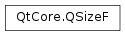

QSizeF¶
Synopsis¶
Functions¶
- def
__add__(, s2) - def
__div__(, c) - def
__eq__(, s2) - def
__iadd__(arg__1) - def
__idiv__(c) - def
__imul__(c) - def
__isub__(arg__1) - def
__mul__(, c) - def
__mul__(c) - def
__ne__(, s2) - def
__reduce__() - def
__repr__() - def
__sub__(, s2) - def
boundedTo(arg__1) - def
expandedTo(arg__1) - def
height() - def
isEmpty() - def
isNull() - def
isValid() - def
scale(s, mode) - def
scale(w, h, mode) - def
scaled(s, mode) - def
scaled(w, h, mode) - def
setHeight(h) - def
setWidth(w) - def
toSize() - def
toTuple() - def
transpose() - def
transposed() - def
width()
Detailed Description¶
The
PySide2.QtCore.QSizeFclass defines the size of a two-dimensional object using floating point precision.A size is specified by a
PySide2.QtCore.QSizeF.width()and aPySide2.QtCore.QSizeF.height(). It can be set in the constructor and changed using thePySide2.QtCore.QSizeF.setWidth(),PySide2.QtCore.QSizeF.setHeight(), orPySide2.QtCore.QSizeF.scale()functions, or using arithmetic operators. A size can also be manipulated directly by retrieving references to the width and height using thePySide2.QtCore.QSizeF.rwidth()andPySide2.QtCore.QSizeF.rheight()functions. Finally, the width and height can be swapped using thePySide2.QtCore.QSizeF.transpose()function.The
PySide2.QtCore.QSizeF.isValid()function determines if a size is valid. A valid size has both width and height greater than or equal to zero. ThePySide2.QtCore.QSizeF.isEmpty()function returnstrueif either of the width and height is less than (or equal to) zero, while thePySide2.QtCore.QSizeF.isNull()function returnstrueonly if both the width and the height is zero.Use the
PySide2.QtCore.QSizeF.expandedTo()function to retrieve a size which holds the maximum height and width of this size and a given size. Similarly, thePySide2.QtCore.QSizeF.boundedTo()function returns a size which holds the minimum height and width of this size and a given size.The
PySide2.QtCore.QSizeFclass also provides thePySide2.QtCore.QSizeF.toSize()function returning aPySide2.QtCore.QSizecopy of this size, constructed by rounding the width and height to the nearest integers.
PySide2.QtCore.QSizeFobjects can be streamed as well as compared.
-
class
PySide2.QtCore.QSizeF¶ -
class
PySide2.QtCore.QSizeF(sz) -
class
PySide2.QtCore.QSizeF(QSizeF) -
class
PySide2.QtCore.QSizeF(w, h) Parameters: - sz –
PySide2.QtCore.QSize - h –
PySide2.QtCore.qreal - QSizeF –
PySide2.QtCore.QSizeF - w –
PySide2.QtCore.qreal
Constructs an invalid size.
See also
Constructs a size with floating point accuracy from the given
size.See also
Constructs a size with the given
widthandheight.- sz –
-
PySide2.QtCore.QSizeF.__reduce__()¶ Return type: PyObject
-
PySide2.QtCore.QSizeF.__repr__()¶ Return type: PyObject
-
PySide2.QtCore.QSizeF.boundedTo(arg__1)¶ Parameters: arg__1 – PySide2.QtCore.QSizeFReturn type: PySide2.QtCore.QSizeFReturns a size holding the minimum width and height of this size and the given
otherSize.
-
PySide2.QtCore.QSizeF.expandedTo(arg__1)¶ Parameters: arg__1 – PySide2.QtCore.QSizeFReturn type: PySide2.QtCore.QSizeFReturns a size holding the maximum width and height of this size and the given
otherSize.
-
PySide2.QtCore.QSizeF.height()¶ Return type: PySide2.QtCore.qrealReturns the height.
-
PySide2.QtCore.QSizeF.isEmpty()¶ Return type: PySide2.QtCore.boolReturns
trueif either of the width and height is less than or equal to 0; otherwise returnsfalse.
-
PySide2.QtCore.QSizeF.isNull()¶ Return type: PySide2.QtCore.boolReturns
trueif both the width and height are 0.0 (ignoring the sign); otherwise returnsfalse.
-
PySide2.QtCore.QSizeF.isValid()¶ Return type: PySide2.QtCore.boolReturns
trueif both the width and height is equal to or greater than 0; otherwise returnsfalse.
-
PySide2.QtCore.QSizeF.__ne__(s2)¶ Parameters: s2 – PySide2.QtCore.QSizeFReturn type: PySide2.QtCore.bool
-
PySide2.QtCore.QSizeF.__mul__(c)¶ Parameters: c – PySide2.QtCore.qrealReturn type: PySide2.QtCore.QSizeF
-
PySide2.QtCore.QSizeF.__mul__(c) Parameters: c – PySide2.QtCore.qrealReturn type: PySide2.QtCore.QSizeF
-
PySide2.QtCore.QSizeF.__imul__(c)¶ Parameters: c – PySide2.QtCore.qrealReturn type: PySide2.QtCore.QSizeFThis is an overloaded function.
Multiplies both the width and height by the given
factorand returns a reference to the size.See also
-
PySide2.QtCore.QSizeF.__add__(s2)¶ Parameters: s2 – PySide2.QtCore.QSizeFReturn type: PySide2.QtCore.QSizeF
-
PySide2.QtCore.QSizeF.__iadd__(arg__1)¶ Parameters: arg__1 – PySide2.QtCore.QSizeFReturn type: PySide2.QtCore.QSizeFAdds the given
sizeto this size and returns a reference to this size. For example:s = QSizeF( 3, 7) r = QSizeF(-1, 4) s += r # s becomes (2,11)
-
PySide2.QtCore.QSizeF.__sub__(s2)¶ Parameters: s2 – PySide2.QtCore.QSizeFReturn type: PySide2.QtCore.QSizeF
-
PySide2.QtCore.QSizeF.__isub__(arg__1)¶ Parameters: arg__1 – PySide2.QtCore.QSizeFReturn type: PySide2.QtCore.QSizeFSubtracts the given
sizefrom this size and returns a reference to this size. For example:s = QSizeF( 3, 7) r = QSizeF(-1, 4) s -= r # s becomes (4,3)
-
PySide2.QtCore.QSizeF.__div__(c)¶ Parameters: c – PySide2.QtCore.qrealReturn type: PySide2.QtCore.QSizeF
-
PySide2.QtCore.QSizeF.__idiv__(c)¶ Parameters: c – PySide2.QtCore.qrealReturn type: PySide2.QtCore.QSizeFThis is an overloaded function.
Divides both the width and height by the given
divisorand returns a reference to the size.See also
-
PySide2.QtCore.QSizeF.__eq__(s2)¶ Parameters: s2 – PySide2.QtCore.QSizeFReturn type: PySide2.QtCore.bool
-
PySide2.QtCore.QSizeF.scale(w, h, mode)¶ Parameters: - w –
PySide2.QtCore.qreal - h –
PySide2.QtCore.qreal - mode –
PySide2.QtCore.Qt.AspectRatioMode
Scales the size to a rectangle with the given
widthandheight, according to the specifiedmode.- If
modeisQt.IgnoreAspectRatio, the size is set to (width,height). - If
modeisQt.KeepAspectRatio, the current size is scaled to a rectangle as large as possible inside (width,height), preserving the aspect ratio. - If
modeisQt.KeepAspectRatioByExpanding, the current size is scaled to a rectangle as small as possible outside (width,height), preserving the aspect ratio.
Example:
t1 = QSizeF(10, 12) t1.scale(60, 60, Qt.IgnoreAspectRatio) # t1 is (60, 60) t2 = QSizeF(10, 12) t2.scale(60, 60, Qt.KeepAspectRatio) # t2 is (50, 60) t3 = QSizeF(10, 12) t3.scale(60, 60, Qt.KeepAspectRatioByExpanding) # t3 is (60, 72)
- w –
-
PySide2.QtCore.QSizeF.scale(s, mode) Parameters: This is an overloaded function.
Scales the size to a rectangle with the given
size, according to the specifiedmode.
-
PySide2.QtCore.QSizeF.scaled(w, h, mode)¶ Parameters: - w –
PySide2.QtCore.qreal - h –
PySide2.QtCore.qreal - mode –
PySide2.QtCore.Qt.AspectRatioMode
Return type: Returns a size scaled to a rectangle with the given
widthandheight, according to the specifiedmode.See also
- w –
-
PySide2.QtCore.QSizeF.scaled(s, mode) Parameters: Return type: This is an overloaded function.
Returns a size scaled to a rectangle with the given size
s, according to the specifiedmode.
-
PySide2.QtCore.QSizeF.setHeight(h)¶ Parameters: h – PySide2.QtCore.qrealSets the height to the given
height.See also
PySide2.QtCore.QSizeF.height()PySide2.QtCore.QSizeF.rheight()PySide2.QtCore.QSizeF.setWidth()
-
PySide2.QtCore.QSizeF.setWidth(w)¶ Parameters: w – PySide2.QtCore.qrealSets the width to the given
width.See also
PySide2.QtCore.QSizeF.width()PySide2.QtCore.QSizeF.rwidth()PySide2.QtCore.QSizeF.setHeight()
-
PySide2.QtCore.QSizeF.toSize()¶ Return type: PySide2.QtCore.QSizeReturns an integer based copy of this size.
Note that the coordinates in the returned size will be rounded to the nearest integer.
See also
PySide2.QtCore.QSizeF.QSizeF()
-
PySide2.QtCore.QSizeF.toTuple()¶ Return type: PyObject
-
PySide2.QtCore.QSizeF.transpose()¶ Swaps the width and height values.
-
PySide2.QtCore.QSizeF.transposed()¶ Return type: PySide2.QtCore.QSizeFReturns the size with width and height values swapped.
See also
-
PySide2.QtCore.QSizeF.width()¶ Return type: PySide2.QtCore.qrealReturns the width.
© 2018 The Qt Company Ltd. Documentation contributions included herein are the copyrights of their respective owners. The documentation provided herein is licensed under the terms of the GNU Free Documentation License version 1.3 as published by the Free Software Foundation. Qt and respective logos are trademarks of The Qt Company Ltd. in Finland and/or other countries worldwide. All other trademarks are property of their respective owners.